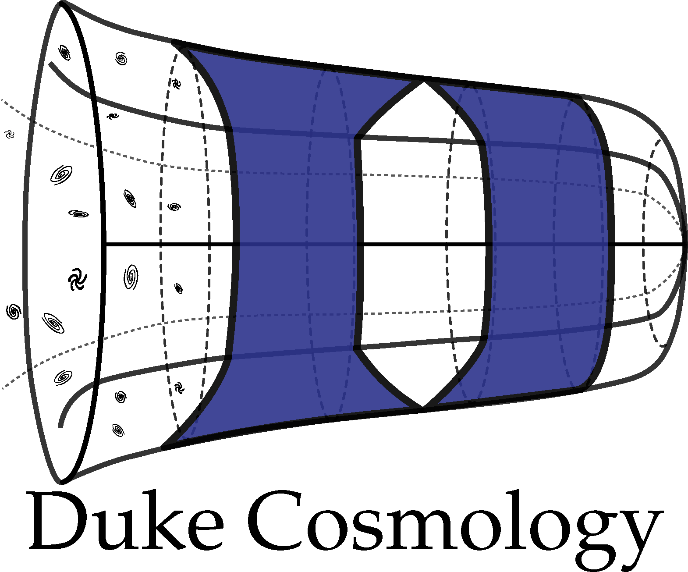
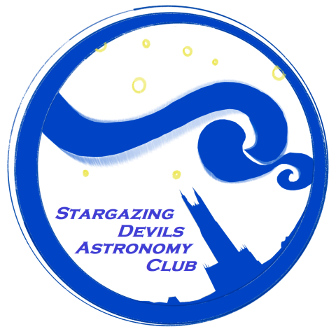
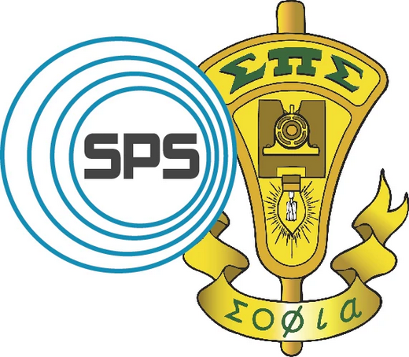

Experience
May 2025 — Present
Quantitative Researcher
Cryptocurrency Proprietary Trading Firm (Confidential)
Quantitative Researcher

Cryptocurrency Proprietary Trading Firm (Confidential)
-
[cite_start]
- Designed execution algorithms based on alpha signals and microstructure for major CEXs (Okx, Coinbase, Binance), reducing slippage costs by ~2bps. [cite: 16] [cite_start]
- Leveraged deep learning to predict short-term price dynamics, achieving a post-fee Sharpe ratio > 10 on Coinbase. [cite: 17] [cite_start]
- Integrated 200+ medium-to-high frequency factors (k-line, order book, derivatives), significantly improving win rates in live models. [cite: 18]
Feb 2025 — Aug 2025
Quantitative Researcher
InsightCheck Investment Co., Ltd. | Shenzhen, China
Quantitative Researcher

InsightCheck Investment Co., Ltd. | Shenzhen, China
-
[cite_start]
- Modeled market microstructure based on order book queues and position controls. [cite: 21] [cite_start]
- Built an optimized order book reconstruction engine (Level-3 data) in Rust/Python, achieving 100% accuracy and ~1s processing speed for the full A-share universe. [cite: 23] [cite_start]
- Constructed 15 high-Sharpe factors (sec/min frequency) and 2 market-making models, with 2bps avg post-fee return. [cite: 22]
Jun 2024 — Aug 2024
Research Fellow (SURF Program)
SPHEREx Team, Caltech | [cite_start]Mentor: Dr. Olivier Doré (JPL) [cite: 117, 120]
Research Fellow (SURF Program)

SPHEREx Team, Caltech | [cite_start]Mentor: Dr. Olivier Doré (JPL) [cite: 117, 120]
-
[cite_start]
- Developed a convolutional neural network (ResUNet) to predict window function effects on galaxy power spectrum measurements. [cite: 122] [cite_start]
- Enhanced accuracy of local primordial non-Gaussianity $f_{NL}$ parameter inference for SPHEREx by 40%. [cite: 123, 42] [cite_start]
- Generated lognormal mock catalogs with real SPHEREx survey masks using Julia/Python simulation program. [cite: 121, 39]
Sept 2023 — Aug 2024
Research Assistant
Duke Cosmology Group | [cite_start]Mentor: Prof. Daniel Scolnic [cite: 133, 134]
Research Assistant

Duke Cosmology Group | [cite_start]Mentor: Prof. Daniel Scolnic [cite: 133, 134]
-
[cite_start]
- Developed a Python pipeline to create synthetic stellar catalogs and extract features from H-R diagrams for Distance Ladder calibration. [cite: 135, 136] [cite_start]
- Compared JWST distance measurement results from recent literature and quantified galaxy-dust correlations using latest SDSS data with SQL queries. [cite: 137, 138] [cite_start]
- Contributed to a joint paper accepted by The Astrophysical Journal (ApJ). [cite: 138]
May 2022 — Dec 2024
Research Assistant
Duke Cosmology Group | [cite_start]Mentor: Prof. Michael A. Troxel [cite: 127, 128]-
[cite_start]
- Developed a Python pipeline for joint analysis of Roman Space Telescope and Rubin Observatory simulations. [cite: 129] [cite_start]
- Applied MCMC inference and evaluated mode-based strategies, resulting in a 20% increase in the Figure of Merit for cosmological parameter constraints. [cite: 129, 130] [cite_start]
- Designed and implemented a Python-based weak gravitational lensing analysis algorithm, effectively processing over 1000 datasets. [cite: 27]
May 2023 — Aug 2023
Team Lead (Data-plus Program)
[cite_start]Quantifying Wetland Carbon Emissions in Southeastern US [cite: 139]
Team Lead (Data-plus Program)

[cite_start]Quantifying Wetland Carbon Emissions in Southeastern US [cite: 139]
-
[cite_start]
- Wrote and optimized a **Random Forest model** ($R^2=0.91$) and a layered **Shiny web app** for visualization. [cite: 142, 56, 55] [cite_start]
- Employed climatology knowledge to an **adaptive missing value imputation method** to clean hundreds of feature data points. [cite: 142, 54]
Sept 2021 — Aug 2022
Research Assistant
Duke High Energy Physics Group (LHC) | [cite_start]Mentor: Prof. Ashutosh Kotwal [cite: 144, 145]
Research Assistant

Duke High Energy Physics Group (LHC) | [cite_start]Mentor: Prof. Ashutosh Kotwal [cite: 144, 145]
-
[cite_start]
- Implemented and optimized computational graphic algorithm in **C++** for particle collision fragment path reconstruction on **FPGA** architecture. [cite: 146, 65] [cite_start]
- Achieved throughput of **< 25 ns** to allow reconstruction of fragment paths from 70 collisions—a several order of magnitude increase in efficiency. [cite: 147, 66] [cite_start]
- Work contributed to an article published in *Journal of High Energy Physics*[cite: 68].
Mar 2020 — Present
Open-Source Intelligence Analyst
[cite_start]Oryx (Volunteer/Remote) [cite: 193]
Open-Source Intelligence Analyst

[cite_start]Oryx (Volunteer/Remote) [cite: 193]
-
[cite_start]
- Geo-located footage and kept track of material losses based on visual evidence and social media intelligence. [cite: 194, 212] [cite_start]
- Contributed 47 recorded geo-locations to the database. [cite: 194]
2022 — 2024
Teaching Assistant
[cite_start]Duke University Math Department [cite: 155]
Teaching Assistant

[cite_start]Duke University Math Department [cite: 155]
-
[cite_start]
- Assisted over 40 students weekly with Multivariable Calculus, Linear Algebra, and Advanced Probability during two 3-hour Math Help Room shifts. [cite: 157, 155] [cite_start]
- Prepared and led two 1-hour discussion sessions weekly for Multivariable Calculus as a SAGE Facilitator. [cite: 158] [cite_start]
- Rated **"Excellent"** with a score of 30/30 by supervisor and peers in the annual TA review of 2023 and 2024. [cite: 159, 51]
July 2020 — Aug 2020
Computer Vision Algorithm Engineer
[cite_start]Zhejiang Deepcode Robotics Co., Ltd [cite: 160]
Computer Vision Algorithm Engineer

[cite_start]Zhejiang Deepcode Robotics Co., Ltd [cite: 160]
-
[cite_start]
- Designed, coded, and debugged Computer Vision algorithms for tennis coach-bots. [cite: 162] [cite_start]
- Implemented research results on object identification and tracking, achieving **97% detection of fast tennis balls**. [cite: 163]
Leadership
Founder, President
2021 — Present
Stargazing Devils Astronomy Club
[cite_start]Duke University [cite: 167]
2021 — Present
Stargazing Devils Astronomy Club

[cite_start]Duke University [cite: 167]
-
[cite_start]
- Founded and lead the first Astronomy Club at Duke; organized weekly astronomy open house at the Duke Teaching Observatory with 100+ audiences. [cite: 168, 166] [cite_start]
- Served as a **NASA Partner Eclipse Ambassador**; secured funding and organized trips for 14 students to the 2023/2024 solar eclipses. [cite: 169, 170] [cite_start]
- Organized solar eclipse watch party with **300+ participants**[cite: 171]. [cite_start]Hosted 20+ astrophotography events with the Skynet platform and telescopes. [cite: 172]
President
2023 — 2024
Society of Physics Students
[cite_start]Duke University [cite: 176]
2023 — 2024
Society of Physics Students

[cite_start]Duke University [cite: 176]
-
[cite_start]
- Revived chapter from pandemic; organized four research panels and six student-faculty seminars/tours. [cite: 177] [cite_start]
- Organized the 2023 SPS Zone 5 meeting with **100+ participants**, winning the **2023 Outstanding Chapter Award**[cite: 179]. [cite_start]
- Launched **MATLAB and LATEX workshops**, grad school info panels, and a Women's mentorship program. [cite: 178] [cite_start]
- Volunteered 35+ hours in departmental physics outreach to 7 local schools and science fairs. [cite: 180]
June 2022 — May 2024
APS Student Ambassador
[cite_start]American Physical Society (Remote) [cite: 181]
APS Student Ambassador

[cite_start]American Physical Society (Remote) [cite: 181]
-
[cite_start]
- Invited to the 2023/2024 APS Leadership Meetings to advocate on policy priorities for the physics community on US Congressional Visits Day. [cite: 185] [cite_start]
- Hosted the **PULSE Webinar Series** (Physics Undergraduates Learning and Sharing Experiences) as Technology Chair. [cite: 186] [cite_start]
- Organized physics study sessions, manuscript workshops, and publication parties. [cite: 184]
Sept 2021 — Aug 2024
Peer Reviewer & Senior Editor
[cite_start]Duke Vertices Science Journal [cite: 187, 188]
Peer Reviewer & Senior Editor

[cite_start]Duke Vertices Science Journal [cite: 187, 188]
-
[cite_start]
- Implemented a synopsis system for general audiences that resulted in a **210% increase in website visits**[cite: 190]. [cite_start]
- Review 2 manuscripts per month on STEM topics; invited by editor-in-chief to join the Executive Team. [cite: 189, 191]